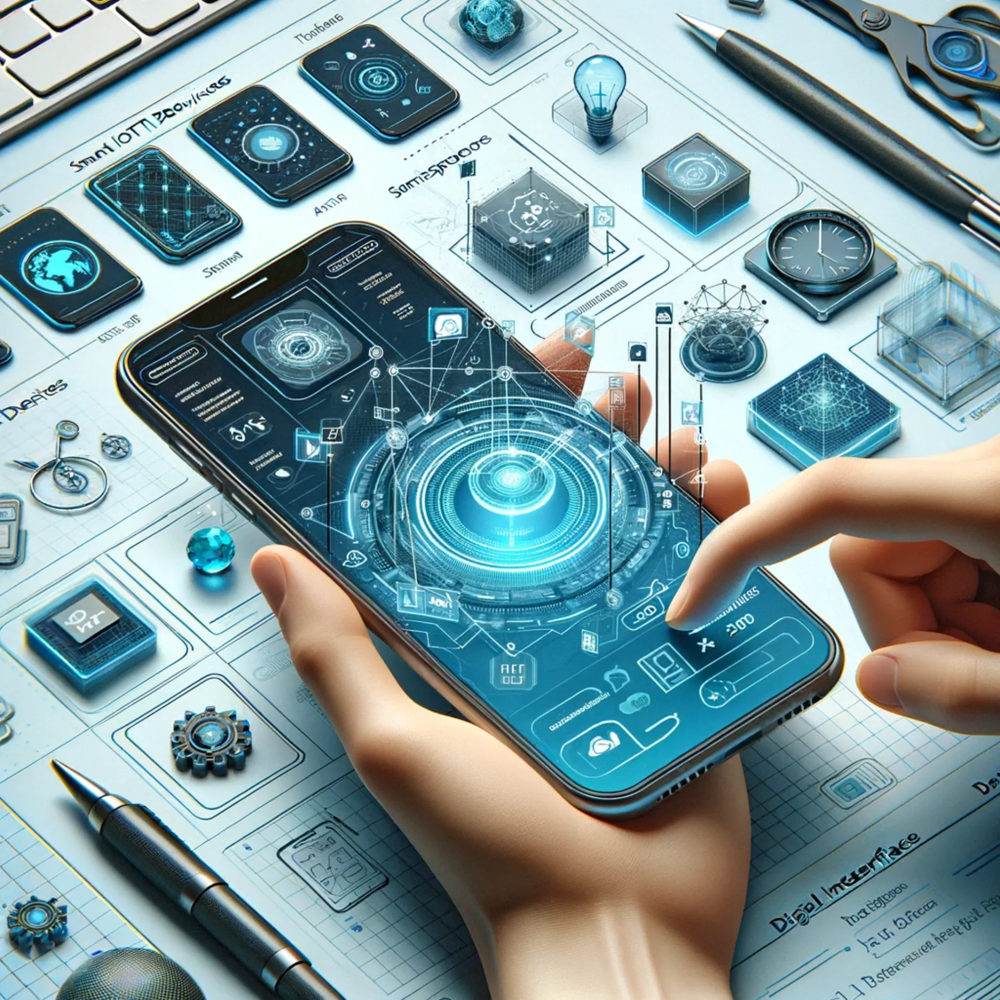
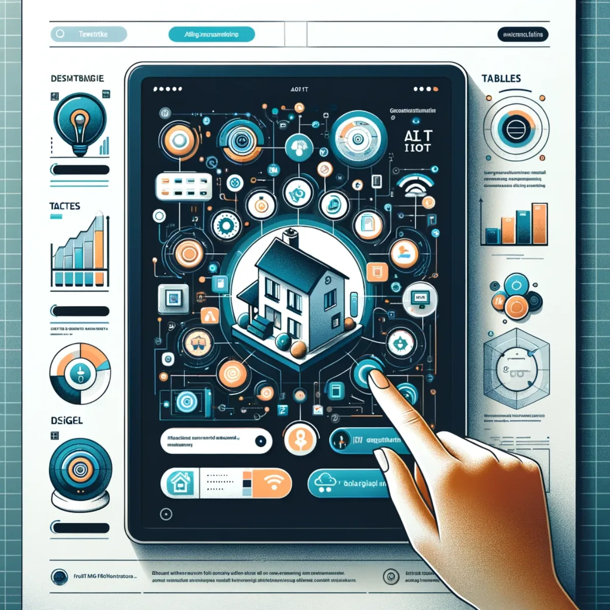
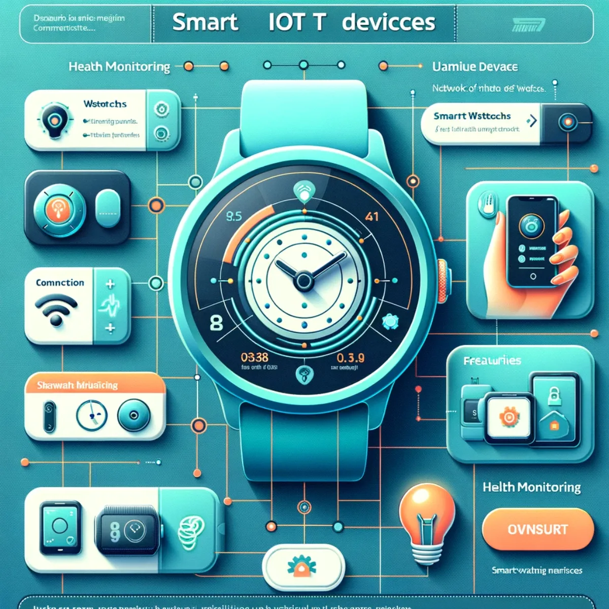
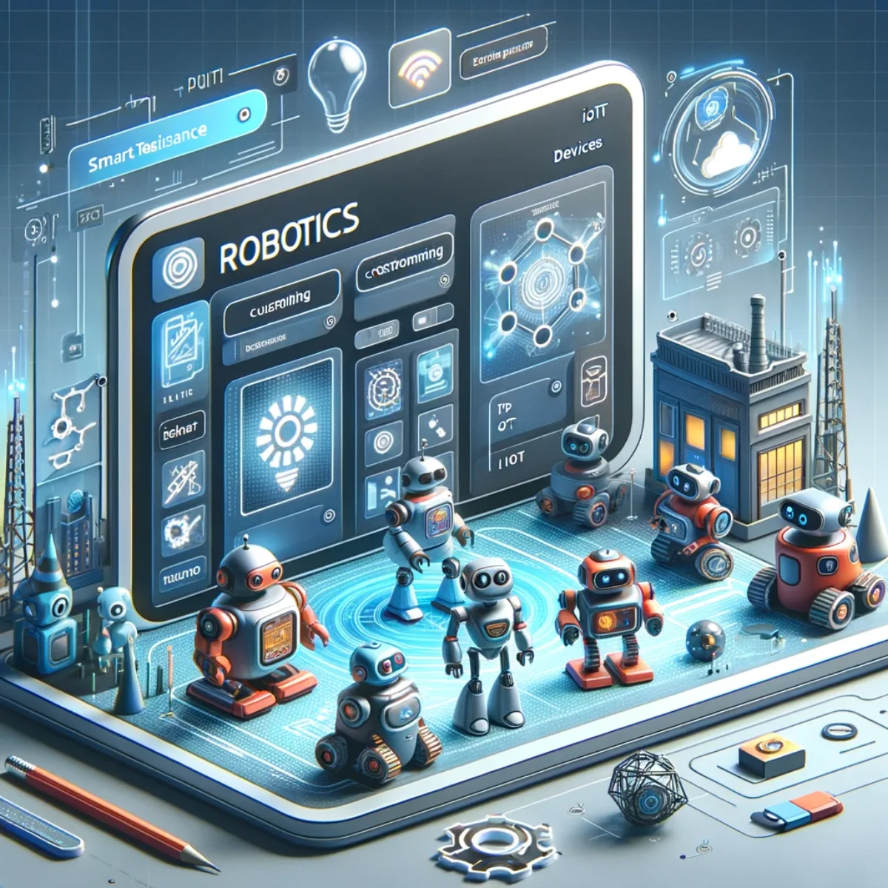
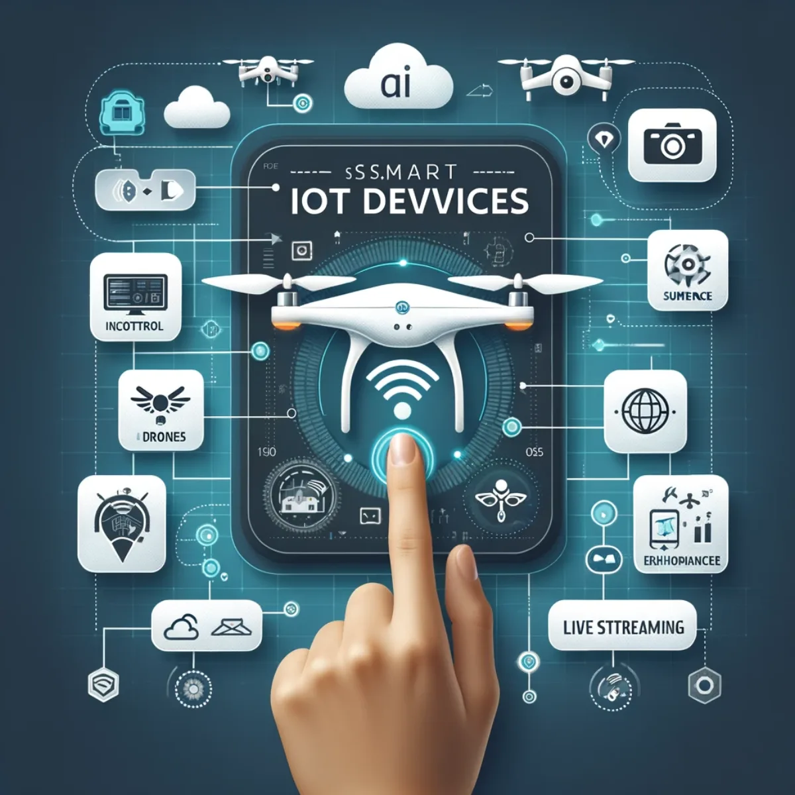
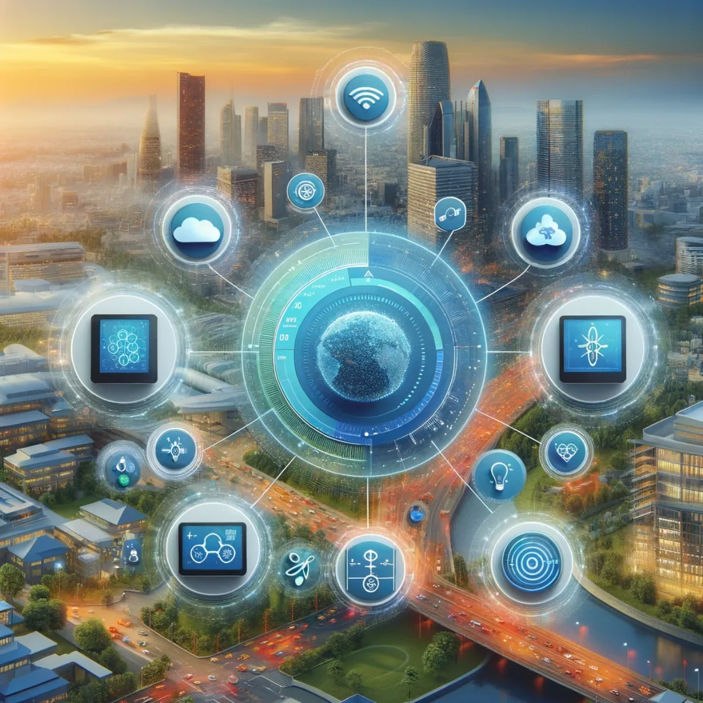

Pathways / Life & living
Smart IoT Devices
Every device in your life, working together on your terms: phones, tablets, watches, robots, drones, your home, your business, and a compass that reads more than direction, all part of a setup you own and shape yourself.

Your world, in your hand
Smartphones
Your smartphone becomes the everyday way into all of this. Choose the phone that fits you and make it your main link to your own Aura, connecting your digital and physical lives. You pick the devices and set the standard for connectivity, performance and security: the setup is yours, not handed down to you, and it changes as your needs do.

A bigger canvas, still yours
Tablets
A tablet turns your environment into a wider canvas. Choose the one that suits you and let your own Aura spread across a larger, tactile screen: a visual, hands-on experience that stays personal because you built it. It's yours to keep and shape, not a rented window into someone else's system.

Wear your own Aura
Smart Watches
A smartwatch does more than tell time; it keeps your own Aura on your wrist. Track your health, manage your schedule, and stay in step with your day, with a companion you set up to work your way. Your data stays yours, and the setup grows with you rather than resetting each renewal.

Build your own helpers
Robotics
Bring robotics into a collaborative everyday life on your own terms. Choose robots that fit your world and connect to your Aura, learning your habits and adapting to the rhythm of your days. It's a partnership you shape and own, for personal, social or business goals, and it keeps evolving as you do.

Your own view from above
Drones
Bring the sky within reach with drones you choose and connect to your own Aura. Get a bird's-eye view of your world, whether that's capturing footage or handling detailed tasks, all controlled by you. The setup is yours to keep and shape, not something rented back to you.

Automate your own haven
Home Automation
Turn your living space into a place of ease with home automation you set up yourself. Connect it to your Aura so it learns and adapts to your preferences, making a home that responds to your needs and moods. You own the setup and it stays yours, evolving as your life at home does.
Streamline it your way
Business Automation
Bring automation into your business with tools you choose and connect to your Aura. From managing resources to smoothing operations, you build a setup that lets you focus on growth while it handles the rest. It's owned by you and your business, custom to how you work, and grows as you grow, rather than rented from big tech.

Read your own surroundings
Environment Sensors
Stay tuned to the subtleties of your surroundings with sensors you choose and connect to your Aura. Get real-time data and insight to monitor, understand and adjust your environment for better living and working. The setup is yours, your readings stay yours, and it sharpens the more you use it.

Navigate your own story
Your Magic Compass
Chart your journey with your own Magic Compass, built to sit in tune with your Aura. Find routes that fit your story and guidance shaped to your life, so you navigate not just places but possibilities. It reads more than direction, it's yours to keep, and it comes to know you better over time.
Keep exploring